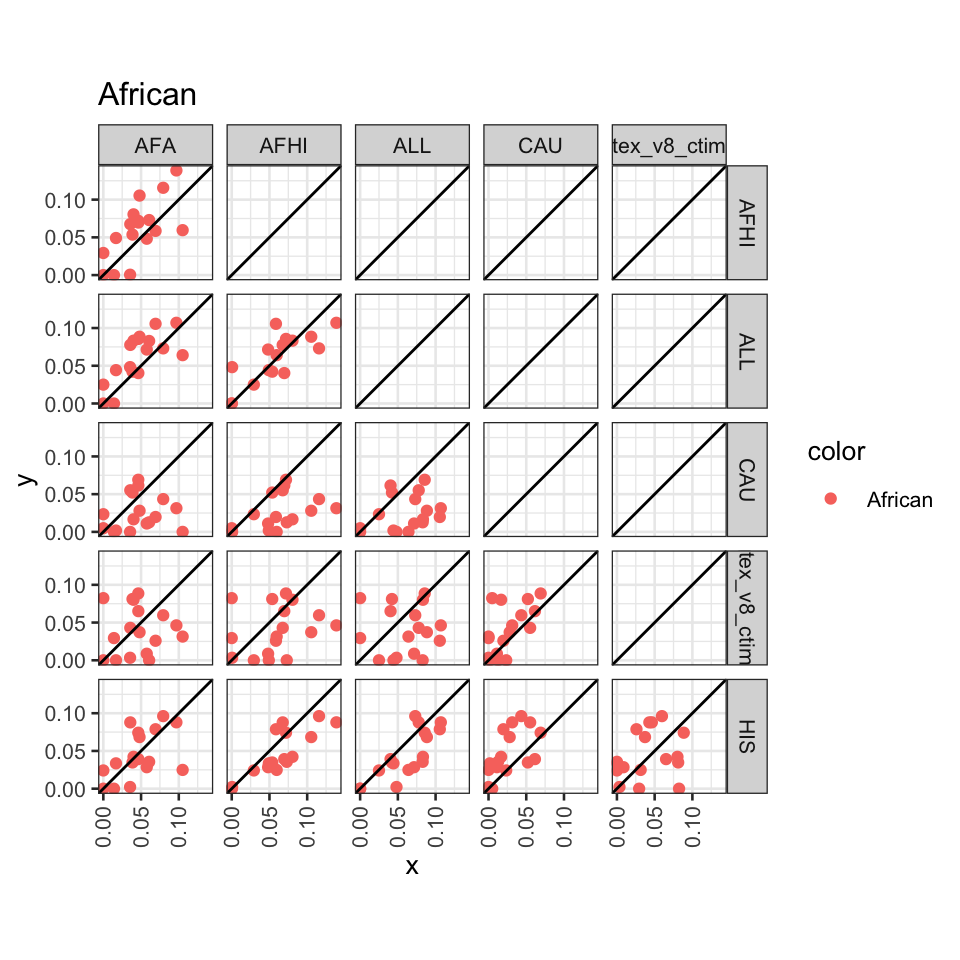
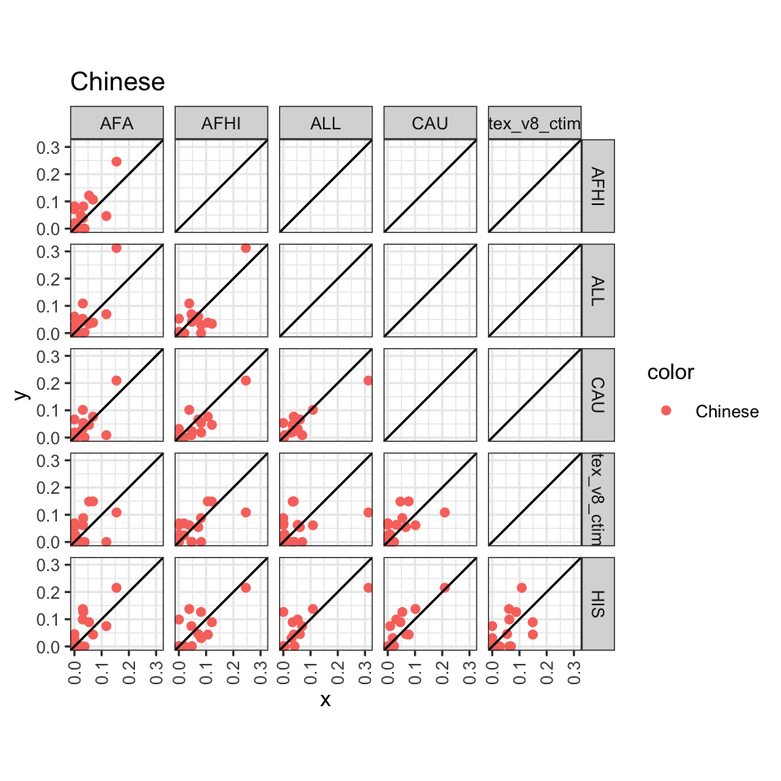
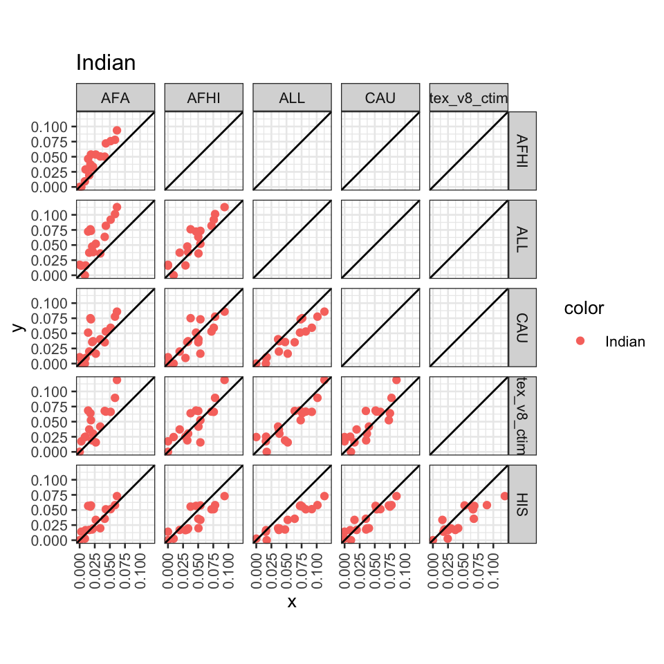
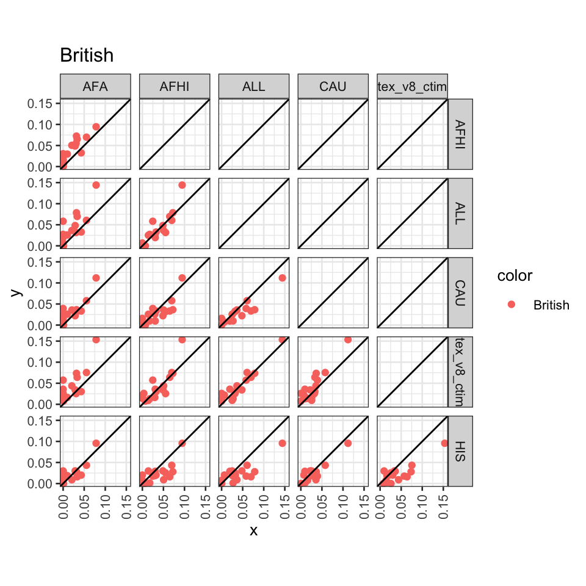

library(ggplot2)
library(dplyr)
library(pander)
options(stringsAsFactors = F)
source('../code/rlib_doc.R')
source('https://gist.githubusercontent.com/liangyy/43912b3ecab5d10c89f9d4b2669871c9/raw/8151c6fe70e3d4ee43d9ce340ecc0eb65172e616/my_ggplot_theme.R')
th$panel.border = element_rect(colour = th$axis.line$colour)
theme_set(theme_bw(base_size = 10))Load CTIMP results.
ctimp = readRDS('../analysis_output/regulability_ctimp.rds')
ctimp = ctimp %>% select(-long, -hail) %>% mutate(model = 'gtex_v8_ctimp')Load MESA results.
pops = c('African', 'Chinese', 'Indian', 'British-test-1')
models = c('AFA', 'CAU', 'AFHI', 'HIS', 'ALL')
tmp_list = list()
for(p in pops) {
for(m in models) {
filename = paste0('~/Desktop/tmp/gcta_regu/reml_from_hail_martin_et_al_traits_x_', m, '_x_', p, '.tsv')
tmp_list[[length(tmp_list) + 1]] = read.table(filename, header = T, sep = '\t') %>% mutate(population = p, model = m)
}
}
mesa = do.call(rbind, tmp_list)regu = rbind(ctimp, mesa)
regu$h_sq[is.na(regu$h_sq)] = 0
regu$population[regu$population == 'British-test-1'] = 'British'
pops[which(pops == 'British-test-1')] = 'British'regu_reshape = regu %>% select(population, trait, h_sq, model) %>% dcast( trait + population ~ model, value.var = 'h_sq')
# pp = list()
for(p in pops) {
pp = myggpairs(
regu_reshape %>% filter(population == p) %>% select(-population, -trait),
col = regu_reshape %>% filter(population == p) %>% pull(population)
) + geom_abline(slope = 1, intercept = 0) + coord_equal() + ggtitle(p) +
theme(axis.text.x = element_text(angle = 90, hjust = 1, vjust = 0.5))
print(pp)
}